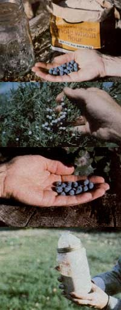

You can enjoy the zesty, robust flavor of natural sourdough breads by . . .
My first experience with wild yeast took place a few years back, while I was conducting a primitive living expedition in the rugged terrain of the Pacific Northwest. At the start of the trip-as is the usual procedure on such survival adventures-each member was given a ration of whole wheat flour sweetened with a lump or two of raw sugar . . . as "basic food" to supplement our gathered wild fare. Every evening we'd mix the flour with water, form the paste into a kind of tortilla, and then cook the dough in the hot coals of the fire.
The resulting "ash cakes" actually tasted good on the first day, and were even edible when the third evening came around. But by our eighth day in the woods, we all hungered for a taste of fresh-from-the-oven risen bread!
Little did we guess that the means of satisfying our craving was growing all around us! On one of the daily foraging hikes, a member of the group (who was a biochemist, budding botanist, and well-versed historian, to boot) picked a handful of autumn-ripe Oregon grape berries and explained that the white powder covering the fruit was actually an atmospheric fungus . . . more commonly known as yeast!
Wild yeast spores are, he went on to tell us, practically everywhere, and-if they happen to land where there's moisture, sugar, and warm temperatures-the delicate plants will begin to grow and multiply. (Given ideal conditions, yeast can increase its own volume by more than ten times, overnight!)
The airborne microflora are especially attracted to the sweet skin of berries and grapes. They first appear as a whitish powder, but when the membrane of the ripened fruit becomes injured (by pecking birds, perhaps), the yeasty critters slip in and begin to ferment the juice's sugars. (That's why a bowl of overripe fruit-when left in a warm room-will begin to give off a vinous odor.)
Obviously, the fermentation process is no secret . . . it was long ago perfected by our ancestors, and produces a number of soughtafter beverages today! But-somewhere along the line-an enterprising soul (or perhaps a tipsy Egyptian baker) realized that the same yeast that ferments drinks could, when mixed with dough, be used as a leavening agent.
And after delivering that short lecture, the foraging scientist-who was warming up to the subject-went on to tell us the story of sourdough bread.
Legends about the origin of sourdough bread have, it seems, been almost forgotten. According to the tales, the old-time Californian and Alaskan prospectors guarded their sourdough starter-or "sponge", as they called it-closer than they would a poke of gold. The perpetually fermenting yeast culture was the wellspring of every meal ... and often meant the difference between feasting on fresh bread and choking down a weevil-infested, hard-as-a-rock biscuit.
A homegrown leavening "factory" was made by simply combining equal amounts of flour and water, and then allowing the mixture to sour in an earthenware pot for anywhere from 3 to 6 days . . . after which-if the prospector was lucky enough to "catch" some yeast-the dough would become a bubbling mass with a pleasant, slightly alcoholic aroma.
From then on, the "ferment" was kept growing by constant use and subsequent replenishment of the flour and water. A prospector would protect the brewing mass from the belowfreezing northern temperatures by wrapping the sourdough crock in his bindle . . . and the miners were even known to dangle the earthenware pots in pouches around their necks, and then tuck the fragrant cultures under their long johns to keep the yeasty concoctions alive with body heat. (And, the legends go on to say, if the winter winds howled too fiercely, some gold seekers would hole up in their cabins and slurp down the nectarous liquid-or "hooch"-that formed on the surface of a well-fermented pot of starter. The potent brew would send the trainer on a bender that sometimes went on until the weather cleared!)
It's no wonder, then, that the sour starter soon lent its peculiar homebrew aroma to a prospector's cabin and clothing . . . and to his (or, in rare instances, her) own personal body odor as well, Eventually the starter-and the bread it produced-became so well-known that the gold miners themselves took on the name of "sourdoughs".
Well, most of the folklore that the biochemist related was new to me, but I had read about old-timers collecting the bark of certain trees to gather the dough-doubling plants. It had never occurred to me, however, to forage for yeast myself . . . probably because of the ready availability-and low price-of the packeted commercial product, combined with the lack of time to cook with sourdough in today's rushed living pace. But being in the middle of the forest, with plenty of time on my hands (and lots of motivation), I set my sights on producing a batch of wild yeast sourdough.
A BACKWOODS BAKERY
It was easy to spot the powdered blue berries of the Oregon grape (Berberis aquifolium), a fall-ripening hollylike evergreen shrub that grows profusely in the mountain ranges of the Pacific coastal area . . . and in no time at all we had collected dozens of the miniature fruits.
To prepare the "sponge", we simply put a handful or two of the berries in a quart jar, added 2 cups of whole wheat flour, and stirred in 2 cups of lukewarm water. Next we loosely screwed the lid onto the container . . , to allow the gas from the fermenting process to escape, yet-at the same time-to protect the yeast culture from contamination. Then, after placing the starter jar on firewarmed rocks, we merely waited for the prolific yeast to multiply. (One zealous member of the group even slept with the culture, to keep it properly heated during the night! )
After just two days, tiny bubbles appeared in the mixture . . , and we knew that the yeast was "working"! ( A single whiff of the fragrant concoction left no doubt in my mind as to the success of our experiment . . . it smelled like a miniature brewery!) So, armed with a vigorous starter, we set to work to produce some loaves of real sourdough bread.
Before mixing the batter, we removed the berries from our sponge (they were no longer needed as a source of yeast . . . the culture could now perpetuate itself). That done, we combined-in a large bowl-1 cup of the starter with 6 cups of whole wheat flour, and added just enough water to make the mixture easy to handle. The next step was to knead the dough thoroughly (adding about 4 more cups of flour in the process) until it became stiff and no longer stuck to the sides of the bowl. Finally, we shaped the soon-to-be bread into two loaves and set them by the fire to rise. Well, you know what they say about a watched pot . . . it took three hours on the warm rocks for our dough to rise (but even then only by about 1-1/2 inches)!
We put that time to good use, however, by building a stone oven. The primitive cooker was fashioned by setting a large flat rock directly in the coals of the fire, then forming three sides with inch-thick stone slabs and covering the top of the enclosure with a fifth large chunk of rock. Next, we placed our two sausage-shaped loaves on the floor of the crude structure and closed the "door" with a final stone. (During baking, the heat was regulated by simply piling up or scraping away the coals around the sides of the oven.)
Finally, after we'd spent a full hour inhaling the mouthwatering aroma, our sourdough was cooked to perfection . . . we had two golden loaves of hot, wild yeast bread! Our hungry group ate slice after slice of the delicious, close-textured manna. It was as if we were eating bread for the first time! The taste of the homemade sourdough was full and genuine . . . instead of the flavored and preserved mimicry of the real thing that I'd grown used to in storebought loaves.
We discovered in subsequent bakings (you can bet there were quite a few, following that first success!) that it's important to use a fairly large amount of starter in the bread dough . . . or else the baked goods won't always rise. (We ate some rather shinglelike flapjacks until we realized the batter was short on starter.) Our recipes seemed to work best when they included about one cup of homegrown yeast for two loaves of bread. And by replenishing whatever we took from the sponge jar with equal amounts of fresh flour and water, we were able to keep our culture bubbling throughout the trip!
HOME AT THE RANGE
Since that expedition, I've done some experimenting with various types of wild yeast in the sanctity of my own kitchen. The main problem I've come across is collecting the proper microscopic plants. The idea that one merely has to mix up a paste of flour and water and add a few berries to obtain a bucketful of bubbling starter is misleading.
There are, you see, literally thousands of wild yeast spores that can collect on berries or be caught from the air. Harvesting the right variety is a bit like fishing: It requires some skill, and a touch of luck, to coax the yeast you want into your culture. Some berries activate a starter well, while others are a complete flop.
The Oregon grape, for example, works as well in the kitchen as it did on the trail . . . and I have been equally impressed when using juniper berries to get the sponge going. (The shrub Juniperus communis is found in the northern areas of the United States and as far south as New Mexico. An infusion of its dry and somewhat mealy fruit, which ripens in autumn and remains on the plant into early winter, has long been used in maki ng gin.) My husband experimented with juniper berry yeast-while on the trail in southern Utah-by mixing a few handfuls of flour, some berries, and a little water in a plastic bag. After only a couple of hours in the hot sun, the mixture "worked" so well that the plastic bag exploded!
I've also found the aspen (Populus tremuloides) to be a good source of wild yeast. If you run your hand against the trunk of the tree, a white powdery coating will often come off on your palm . . . this is actually a layer of yeast. Just a few pieces of the bark-added to your starter mix-will produce the desired results. (But please, folks, use just a small piece of the bark . . . a strip torn off all the way around the trunk is not only unnecessary, but could actually kill the tree, as well!)
I use pretty much the same "equipment" to prepare my kitchen-brewed sponge that we employed while on the trip. However, I've found that I prefer an earthenware crock to the glass jar . . . although I've also heard that a plastic container is convenient for starter because it's lightweight and easy to transfer to and from the refrigerator. (Never use a metal jug . . . the acids in the fermenting yeast factory will corrode the metal, and the resulting chemicals will then kill the yeast! )
Furthermore, I now make a habit of scalding the crock before adding the starter ingredients, to help keep bacteria from invading the brewing mass. (The hot water also helps to warm the pot before the yeast is added, giving the culture a little boost.) And-as I did on the trail-I use a loose-fitting lid to keep out dust, contaminants, and the family cat.
The recipe for my wild bread starter-on the other hand-has remained exactly the same: two cups of flour to two cups of water, plus a handful or two of berries. (Remember, of course, to remove the fruit promptly once the yeast is brewing. Some berries will flavor the dough, and may even spoil the starter, if allowed to ferment in the mixture.) And each time I make bread or hotcakes with my homegrown yeast, I always set aside one-half cup of the fragrant brew and use it to activate the next batch of starter.
Now that I've become a real sourdough buff, I'm reading up on the subject and-in doing so-have come across various schools of thought as to the proper way to make sourdough starters and breads. For example, some old-timers say to knead the dough vigorously, while others caution that too much thumping will knock out all the leavening gases. (I find that heavy kneading works just fine for me . . . but you'll want to experiment and discover the method that's best for you.)
Another point of contention is whether or not it's permissible to add anything besides flour and water to the starter. Some sourdough gourmets vow that any extra ingredients will spoil the fermenting mass, but I find that a spoonful of sugar (or honey) speeds up the process and has no adverse effects.
And-through trial and error-I've discovered the most critical factor for good wild yeast cultures: heat! Yeast is a living organism . . . and too much heat will kill the dough-doubling plants, while chilly temperatures-even though they don't injure the starter-will put the tiny organisms into a dormant state. The microplant thrives at 75°F, but will die when exposed to temperatures much above 110°F
To keep my culture within the optimal heat range during the day, I simply place the crock on a warm windowsill or beside a heating vent. If I want to activate my yeast during a chilly evening, I set my oven on warm (about 120°) and open the cooker's door. With the "ferment" container sitting on top of the oven and toward the back, it seems to stay just about the right temperature. (Or you might want to use a yogurt maker to control the starter crock's environment even more effectively. If you set the thermostat between 70° and 90°F, you'll be sure to keep your brewing mass up to full snuff.)
However, if you don't plan to use your starter daily (or if the Indian summer heat has your culture fermenting at a fairly fast pace), you might want to refrigerate the sponge to keep the yeast factory from souring too quickly. Just be sure to bring the mixture out of the cooler about an hour before you want to use it again, to allow the culture to return to its former temperature and vigor.
If you plan to be away from home for an extended period of time (say, a couple of weeks), it might even be a good idea to store your yeasty crock in the freezer. Then, when you return, just place 1 tablespoon of the old starter in a clean crock and add 2 cups of flour and 2 cups of water. Allow this fresh culture to age for 24 hours, after which you can use the new sponge in your sourdough recipes. (If you leave a starter in the freezer for more than a month or so, it may be necessary to go through this process again . . . and again . . . and again . . . until the yeasty brew regains its original vitality.) The same technique-which is known as "sweetening the pot"-is used to rejuvenate a starter that has been allowed to mature too long . . . a condition characterized by a lack of bubbling, a layer of hooch floating on the surface, and a lessthan-pleasant odor.
That's about all you need to know in order to harvest and brew your own batch of sourdough from foraged yeast! You'll find that the flavor of "wild" bread is more robust and a little bit more sour than that of baked goods made with packaged leavening . . . and it's a far better taste than you'll find in the airy loaves piled on supermarket shelves.
Once you've treated your tastebuds to the genuine flavor of sourdough bread, "billycan" biscuits, or hot flapjacks . . . you'll never be without a crock of starter again! So go ahead . . . gather your own crop of yeast-bearing bark or berries, brew up a crock of the fermenting sponge, and enjoy!
EDITOR'S NOTE: A good sourcebook for sourdough recipes and more "sourdough lore" is Don and Myrtle Holm's The Complete Sourdough Cookbook, available in most good bookstores or-for $1.95 plus 95 cents shipping and handling-from Mother's Bookshelf, P.O. Box 70, Hendersonville, North Carolina 28791.
|
 The fixin's for our sourdough starter include flour, water, a handful of yeast-covered berries, and a glass container... The powdery-white leavening coats the fruit of the juniper shrub and... the Oregon grape... Gases from the fermenting ""sponge"" expand in the jar's plastic cover. |
|
|